TRANSFER SYSTEM > INSPECTION |
| 1. INSPECT INDICATOR LIGHT |
Check the 4LO indicator light.
Start the engine.
Stop the vehicle.
for Automatic Transmission: Move the shift lever to N.
for Manual Transmission: Depress the clutch pedal.
Turn the transfer position switch from H4 to L4.
Check the 4LO indicator light.
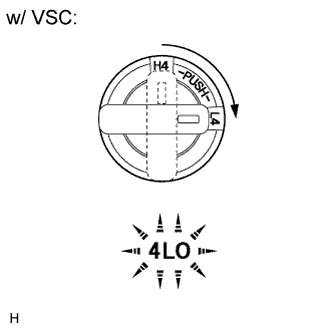 |
| Switch Condition | Specified Condition |
| Turned from H4 to L4 | 4LO indicator light comes on immediately or comes on after blinking |
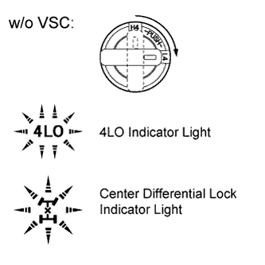 |
| Switch Condition | Specified Condition |
| Turned from H4 to L4 | 4LO indicator light and center differential lock indicator light come on immediately or come on after blinking |
Check the center differential lock indicator light.
Start the engine.
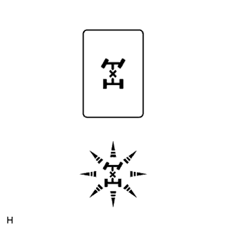 |
Push the center differential lock switch.
Check the center differential lock indicator light.
| Switch Condition | Specified Condition |
| Pushed | Center differential lock indicator light comes on immediately or comes on after blinking |
w/ Rear Differential Lock:
Check the rear differential lock indicator light.
Start the engine.
Stop the vehicle.
for Automatic Transmission: Move the shift lever to N.
for Manual Transmission: Depress the clutch pedal.
Turn the transfer position switch from H4 to L4.
Turn the differential lock switch from OFF to RR.
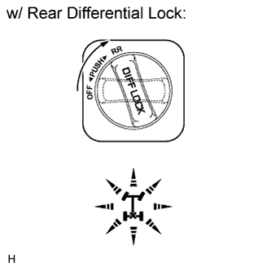 |
Check the rear differential lock indicator light.
| Switch Condition | Specified Condition |
| After transfer position switch is turned from H4 to L4, differential lock switch is turned from OFF to RR | Rear differential lock indicator light comes on immediately or comes on after blinking |
| 2. INSPECT FUSE |
Remove the 4WD fuse from the main body ECU (cowl side junction block LH).
Measure the resistance according to the value(s) in the table below.
| Tester Connection | Condition | Specified Condition |
| 4WD fuse | Always | Below 1 Ω |
| 3. INSPECT TRANSFER POSITION SWITCH |
Remove the transfer position switch (Click here).
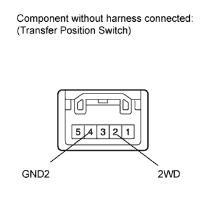 |
Measure the resistance according to the value(s) in the table below.
| Tester Connection | Switch Condition | Specified Condition |
| 2 (2WD) - 4 (GND2) | H4 position | 100 kΩ or higher |
| L4 position | Below 1 Ω |
Check the harness and connector (ECU - transfer position switch and body ground).
Disconnect the A27 ECU connector.
Disconnect the E48 transfer position switch connector.
Measure the resistance according to the value(s) in the table below.
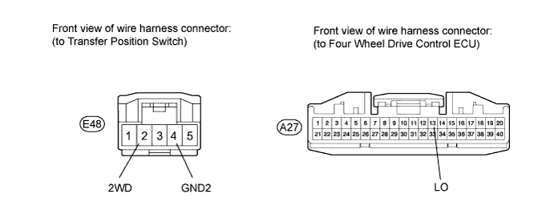
| Tester Connection | Condition | Specified Condition |
| E48-2 (2WD) - A27-13 (LO) | Always | Below 1 Ω |
| E48-2 (2WD) - Body ground | Always | 100 kΩ or higher |
| E48-4 (GND2) - Body ground | Always | Below 1 Ω |
| 4. INSPECT CENTER DIFFERENTIAL LOCK SWITCH |
Remove the center differential lock switch (Click here).
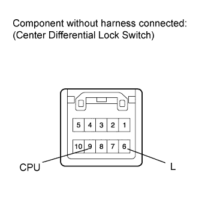 |
Measure the resistance according to the value(s) in the table below.
| Tester Connection | Switch Condition | Specified Condition |
| 6 (L) - 9 (CPU) | Switch is pressed and held | Below 1 Ω |
| Switch is not pressed | 100 kΩ or higher |
Check the harness and connector (ECU - center differential lock switch and body ground).
Disconnect the A27 ECU connector.
Disconnect the E49 center differential lock switch connector.
Measure the resistance according to the value(s) in the table below.
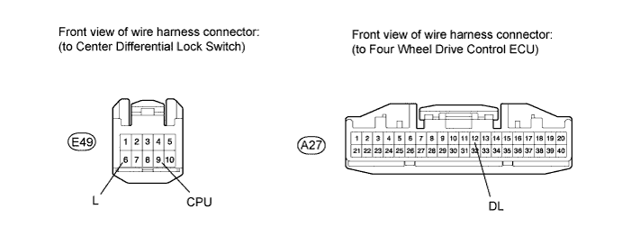
| Tester Connection | Condition | Specified Condition |
| A27-12 (DL) - E49-9 (CPU) | Always | Below 1 Ω |
| A27-12 (DL) - Body ground | Always | 100 kΩ or higher |
| E49-6 (L) - Body ground | Always | Below 1 Ω |
| 5. INSPECT DIFFERENTIAL LOCK SWITCH (w/ Rear Differential Lock) |
Remove the differential lock switch (Click here).
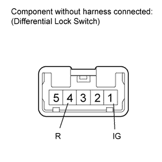 |
Measure the resistance according to the value(s) in the table below.
| Tester Connection | Switch Condition | Specified Condition |
| 1 (IG) - 4 (R) | OFF | 10 kΩ or higher |
| RR | Below 1 Ω |
Check the harness and connector (ECU - differential lock switch and body ground).
Disconnect the A27 ECU connector.
Disconnect the E87 differential lock switch connector.
Measure the resistance according to the value(s) in the table below.
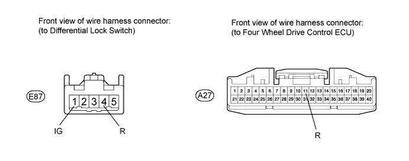
| Tester Connection | Condition | Specified Condition |
| A27-11 (R) - E87-1 (IG) | Always | Below 1 Ω |
| A27-11 (R) - Body ground | Always | 100 kΩ or higher |
| E87-4 (R) - Body ground | Always | Below 1 Ω |
| 6. INSPECT TRANSFER SHIFT ACTUATOR ASSEMBLY (HIGH-LOW TRANSFER SHIFT ACTUATOR) |
Check the harness and connector (ECU - high-low transfer shift actuator).
Disconnect the C38 actuator connector.
Disconnect the A27 and A28 ECU connectors.
Measure the resistance according to the value(s) in the table below.
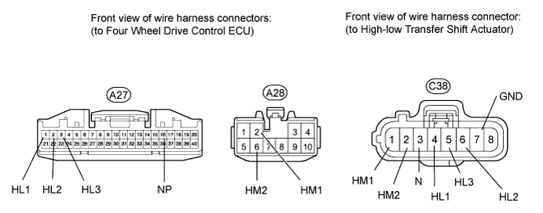
| Tester Connection | Condition | Specified Condition |
| A27-1 (HL1) - C38-4 (HL1) | Always | Below 1 Ω |
| A27-1 (HL1) - Body ground | Always | 100 kΩ or higher |
| A27-2 (HL2) - C38-6 (HL2) | Always | Below 1 Ω |
| A27-2 (HL2) - Body ground | Always | 100 kΩ or higher |
| A27-3 (HL3) - C38-5 (HL3) | Always | Below 1 Ω |
| A27-3 (HL3) - Body ground | Always | 100 kΩ or higher |
| A27-16 (NP) - C38-3 (N) | Always | Below 1 Ω |
| A27-16 (NP) - Body ground | Always | 100 kΩ or higher |
| A28-2 (HM1) - C38-1 (HM1) | Always | Below 1 Ω |
| A28-2 (HM1) - Body ground | Always | 100 kΩ or higher |
| A28-6 (HM2) - C38-2 (HM2) | Always | Below 1 Ω |
| A28-6 (HM2) - Body ground | Always | 100 kΩ or higher |
| C38-7 (GND) - Body ground | Always | Below 1 Ω |
Check the high-low transfer shift actuator.
Turn the engine switch on (IG).
Stop the vehicle.
for Automatic Transmission: Move the shift lever to N.
for Manual Transmission: Depress the clutch pedal.
Check that there is an operating noise from the transfer shift actuator when the transfer position switch is turned from H4 to L4, or L4 to H4.
Remove the transfer shift actuator assembly (Click here).
Check the high to low switch.
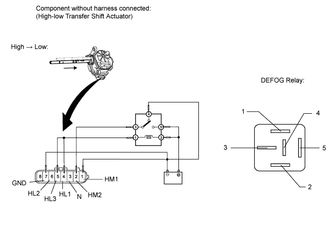
| Tester Connection | Condition | Specified Condition |
| 3 (N) - 7 (GND) | After high to low switch is complete | 100 kΩ or higher |
| 4 (HL1) - 7 (GND) | After high to low switch is complete | 100 kΩ or higher |
| 5 (HL3) - 7 (GND) | After high to low switch is complete | 100 kΩ or higher |
| 6 (HL2) - 7 (GND) | After high to low switch is complete | Below 1 Ω |
Check the low to high switch.
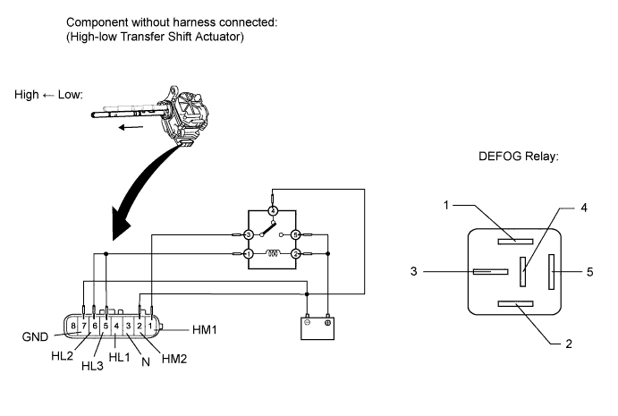
| Tester Connection | Condition | Specified Condition |
| 3 (N) - 7 (GND) | After low to high switch is complete | 100 kΩ or higher |
| 4 (HL1) - 7 (GND) | After low to high switch is complete | Below 1 Ω |
| 5 (HL3) - 7 (GND) | After low to high switch is complete | 100 kΩ or higher |
| 6 (HL2) - 7 (GND) | After low to high switch is complete | 100 kΩ or higher |
| 7. INSPECT TRANSFER SHIFT ACTUATOR ASSEMBLY (CENTER DIFFERENTIAL LOCK ACTUATOR) |
Check the harness and connector (ECU - center differential lock actuator).
Disconnect the C37 actuator connector.
Disconnect the A27 and A28 ECU connectors.
Measure the resistance according to the value(s) in the table below.
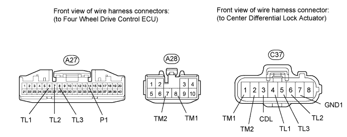
| Tester Connection | Condition | Specified Condition |
| A27-6 (TL1) - C37-4 (TL1) | Always | Below 1 Ω |
| A27-6 (TL1) - Body ground | Always | 100 kΩ or higher |
| A27-7 (TL2) - C37-6 (TL2) | Always | Below 1 Ω |
| A27-7 (TL2) - Body ground | Always | 100 kΩ or higher |
| A27-8 (TL3) - C37-5 (TL3) | Always | Below 1 Ω |
| A27-8 (TL3) - Body ground | Always | 100 kΩ or higher |
| A27-14 (P1) - C37-3 (CDL) | Always | Below 1 Ω |
| A27-14 (P1) - Body ground | Always | 100 kΩ or higher |
| A28-7 (TM2) - C37-2 (TM2) | Always | Below 1 Ω |
| A28-7 (TM2) - Body ground | Always | 100 kΩ or higher |
| A28-8 (TM1) - C37-1 (TM1) | Always | Below 1 Ω |
| A28-8 (TM1) - Body ground | Always | 100 kΩ or higher |
| C37-7 (GND) - Body ground | Always | Below 1 Ω |
Check the center differential lock actuator.
Turn the engine switch on (IG).
Check that there is an operating noise from the transfer shift actuator when the center differential lock switch is pressed to switch from free to lock, or lock to free.
Remove the transfer shift actuator assembly (Click here).
Check the free to lock switch.
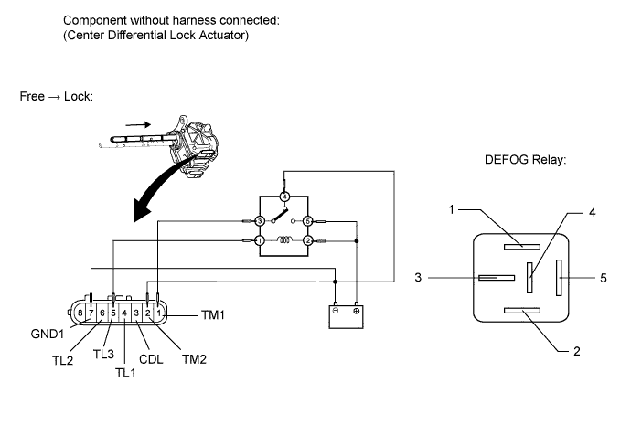
| Tester Connection | Condition | Specified Condition |
| 3 (CDL) - 7 (GND1) | After free to lock switch is complete | Below 1 Ω |
| 4 (TL1) - 7 (GND1) | After free to lock switch is complete | 100 kΩ or higher |
| 5 (TL3) - 7 (GND) | After free to lock switch is complete | 100 kΩ or higher |
| 6 (TL2) - 7 (GND1) | After free to lock switch is complete | Below 1 Ω |
Check the lock to free switch.
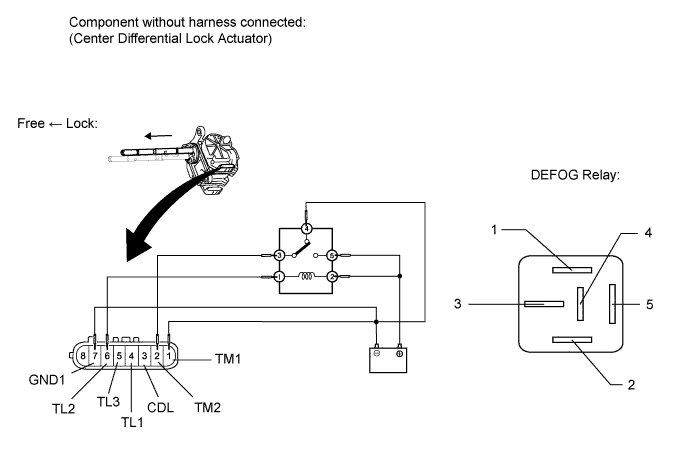
| Tester Connection | Condition | Specified Condition |
| 3 (CDL) - 7 (GND1) | After lock to free switch is complete | 100 kΩ or higher |
| 4 (TL1) - 7 (GND1) | After lock to free switch is complete | 100 kΩ or higher |
| 5 (TL3) - 7 (GND1) | After lock to free switch is complete | Below 1 Ω |
| 6 (TL2) - 7 (GND1) | After lock to free switch is complete | 100 kΩ or higher |
| 8. INSPECT DIFFERENTIAL LOCK SHIFT ACTUATOR (w/ Rear Differential Lock) |
Check the harness and connector (ECU - differential lock shift actuator).
Disconnect the f1 actuator connector.
Disconnect the A27 and A28 ECU connectors.
Measure the resistance according to the value(s) in the table below.
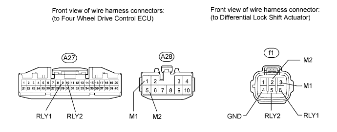
| Tester Connection | Condition | Specified Condition |
| A27-9 (RLY1) - f1-6 (RLY1) | Always | Below 1 Ω |
| A27-9 (RLY1) - Body ground | Always | 100 kΩ or higher |
| A27-10 (RLY2) - f1-5 (RLY2) | Always | Below 1 Ω |
| A27-10 (RLY2) - Body ground | Always | 100 kΩ or higher |
| A28-1 (M1) - f1-3 (M1) | Always | Below 1 Ω |
| A28-1 (M1) - Body ground | Always | 100 kΩ or higher |
| A28-5 (M2) - f1-2 (M2) | Always | Below 1 Ω |
| A28-5 (M2) - Body ground | Always | 100 kΩ or higher |
| f1-4 (GND) - Body ground | Always | Below 1 Ω |
Check the harness and connector (ECU - differential lock position switch).
Disconnect the f2 differential lock position switch connector.
Disconnect the A27 ECU connector.
Measure the resistance according to the value(s) in the table below.
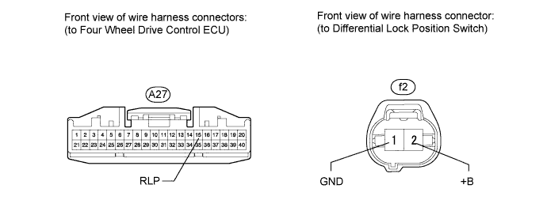
| Tester Connection | Condition | Specified Condition |
| A27-15 (RLP) - f2-2 (+B) | Always | Below 1 Ω |
| A27-15 (RLP) - Body ground | Always | 100 kΩ or higher |
| f2-1 (GND) - Body ground | Always | Below 1 Ω |
Check the differential lock shift actuator.
Turn the engine switch on (IG).
Check that there is an operating noise from the differential lock shift actuator when the differential lock switch is switch from OFF to RR (free to lock), or RR to OFF (lock to free).
Remove the differential lock shift actuator assembly (Click here).
Check the free to lock switch.
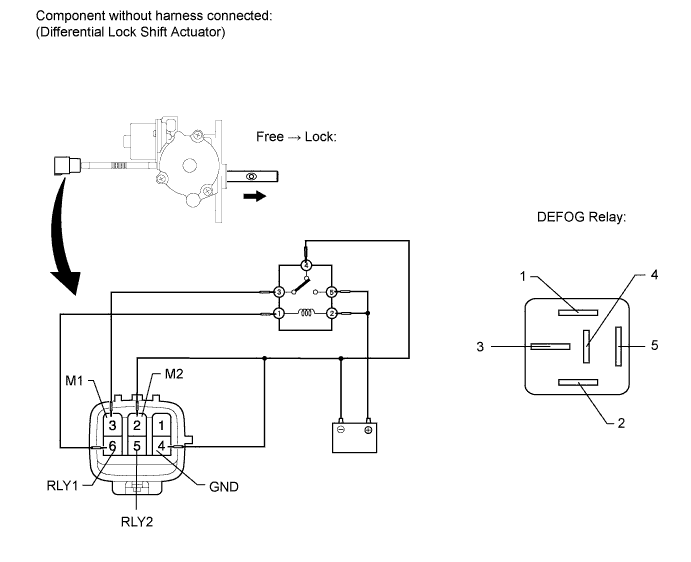
| Tester Connection | Condition | Specified Condition |
| 5 (RLY2) - 4 (GND) | After free to lock switch is complete | Below 12.5 Ω |
| 6 (RLY1) - 4 (GND) | After free to lock switch is complete | 500 kΩ or higher |
Check the lock to free switch.
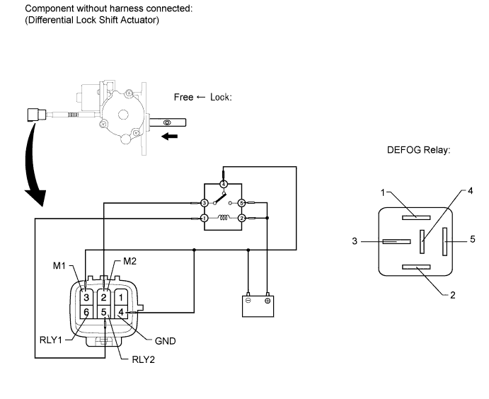
| Tester Connection | Condition | Specified Condition |
| 5 (RLY2) - 4 (GND) | After lock to free switch is complete | 500 kΩ or higher |
| 6 (RLY1) - 4 (GND) | After lock to free switch is complete | Below 12.5 Ω |
Inspect the rear differential lock position switch.
Remove the rear differential lock position switch (Click here).
Measure the resistance according to the value(s) in the table below.

| Tester Connection | Switch Condition | Specified Condition |
| 2 (+B) - 1 (GND) | Pushed | Below 1 Ω |
| Not pushed | 100 kΩ or higher |
| 9. INSPECT FOUR WHEEL DRIVE CONTROL ECU |
Check the four wheel drive control ECU.
Measure the resistance and voltage according to the value(s) in the table below.
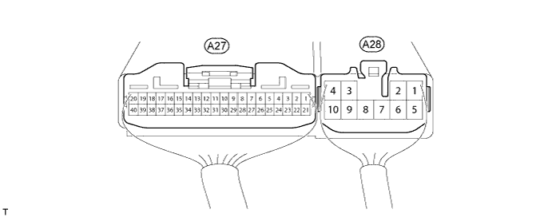
| Tester Connection | Terminal Description | Condition | Specified Condition |
| A27-1 (HL1) - A28-4 (GND) | High-low transfer shift actuator limit switch | Engine switch on (IG) Transfer in high position | Below 1.5 V |
| Engine switch on (IG) Transfer in low position | 11 to 14 V | ||
| Engine switch on (IG) Transfer in neutral position | 11 to 14 V | ||
| A27-2 (HL2) - A28-4 (GND) | High-low transfer shift actuator limit switch | Engine switch on (IG) Transfer in high position | 11 to 14 V |
| Engine switch on (IG) Transfer in low position | Below 1.5 V | ||
| Engine switch on (IG) Transfer in neutral position | 11 to 14 V | ||
| A27-3 (HL3) - A28-4 (GND) | High-low transfer shift actuator limit switch | Engine switch on (IG) Transfer in high position | 11 to 14 V |
| Engine switch on (IG) Transfer in low position | 11 to 14 V | ||
| Engine switch on (IG) Transfer in neutral position | Below 1.5 V | ||
| A27-5 (TT) - A27-25 (TGND)*1 | Temperature sensor | Engine switch on (IG) | 0 to 5 V |
| A27-6 (TL1) - A28-4 (GND) | Center differential lock actuator limit switch | Engine switch on (IG) Center differential in free position | 11 to 14 V |
| Engine switch on (IG) Center differential in lock position | 11 to 14 V | ||
| Engine switch on (IG) Transfer in neutral position | Below 1.5 V | ||
| A27-7 (TL2) - A28-4 (GND) | Center differential lock actuator limit switch | Engine switch on (IG) Center differential in free position | 11 to 14 V |
| Engine switch on (IG) Center differential in lock position | Below 1.5 V | ||
| Engine switch on (IG) Transfer in neutral position | 11 to 14 V | ||
| A27-8 (TL3) - A28-4 (GND) | Center differential lock actuator limit switch | Engine switch on (IG) Center differential in free position | Below 1.5 V |
| Engine switch on (IG) Center differential in lock position | 11 to 14 V | ||
| Engine switch on (IG) Transfer in neutral position | 11 to 14 V | ||
| A27-9 (RLY1) - A28-4 (GND)*2 | Differential lock shift actuator limit switch | Engine switch on (IG) Rear differential in free position | Below 0.5 V |
| Engine switch on (IG) Rear differential in lock position | 11 to 14 V | ||
| A27-10 (RLY2) - A28-4 (GND)*2 | Differential lock shift actuator limit switch | Engine switch on (IG) Rear differential in free position | 11 to 14 V |
| Engine switch on (IG) Rear differential in lock position | Below 0.5 V | ||
| A27-11 (R) - A28-4 (GND)*2 | Differential lock switch | Engine switch on (IG) Differential lock switch in OFF position | 11 to 14 V |
| Engine switch on (IG) Differential lock switch in RR position | Below 1.5 V | ||
| A27-12 (DL) - A28-4 (GND) | Transfer position switch | Engine switch on (IG) Transfer in high position | 11 to 14 V |
| Engine switch on (IG) Transfer in low position | Below 1.5 V | ||
| A27-13 (LO) - A28-4 (GND) | Center differential lock switch | Engine switch on (IG) Center differential lock switch pressed and held | Below 1.5 V |
| Engine switch on (IG) Center differential lock switch not pressed | 11 to 14 V | ||
| A27-14 (P1) - A28-4 (GND) | Center differential lock detection switch | Engine switch on (IG) Center differential in free position | 11 to 14 V |
| Engine switch on (IG) Center differential in lock position | Below 1.5 V | ||
| A27-15 (RLP) - A28-4 (GND)*2 | Rear differential lock position switch | Engine switch on (IG) Rear differential in free position | 11 to 14 V |
| Engine switch on (IG) Rear differential in lock position | Below 1.5 V | ||
| A27-16 (NP) - A28-4 (GND) | Transfer shift actuator neutral position detection switch | Engine switch on (IG) Transfer in neutral position | Below 1.5 V |
| Engine switch on (IG) Transfer in high or low position | 11 to 14 V | ||
| A27-17 (MTN) - A28-4 (GND)*3 | Clutch start switch | Engine switch on (IG) Clutch pedal released | 11 to 14 V |
| Engine switch on (IG) Clutch pedal depressed | Below 2 V | ||
| A27-19 (CAN+) - A27-20 (CAN-) | CAN communication line | Engine switch off | 54 to 69 Ω |
| A27-21 (L4) - A28-4 (GND) | Transfer shift actuator Low detection switch | Transfer position switch in H4 position | 11 to 14 V |
| Engine switch on (IG) Transfer position switch in L4 position | Below 1.5 V | ||
| A28-1 (M1) - A28-4 (GND)*2 | Differential lock shift actuator motor | Engine switch on (IG) Transfer in low position Center differential in lock position Differential lock switch OFF → RR (During operation of differential lock shift actuator motor from free to lock) | 11 to 14 V |
| Engine switch on (IG) Transfer in low position Center differential in lock position Differential lock switch RR → OFF or transfer position switch L4 → H4 (During operation of differential lock shift actuator motor from lock to free) | Below 1.5 V | ||
| A28-2 (HM1) - A28-4 (GND) | High-low transfer shift actuator motor | Engine switch on (IG) Transfer position switch H4 → L4 (During operation of high-low transfer shift actuator motor from high to low) | Below 1.5 V or alternating between below 1.5 V and 11 to 14 V |
| Engine switch on (IG) Transfer position switch L4 → H4 (During operation of high-low transfer shift actuator motor from low to high) | 11 to 14 V | ||
| A28-3 (IG) - A28-4 (GND) | IG power | Engine switch on (IG) | 11 to 14 V |
| A28-4 (GND) - Body ground | Ground | Always | Below 1 Ω |
| A28-5 (M2) - A28-4 (GND)*2 | Differential lock shift actuator motor | Engine switch on (IG) Transfer in low position Center differential in lock position Differential lock switch OFF → RR (During operation of differential lock shift actuator motor from free to lock) | Below 1.5 V |
| Engine switch on (IG) Transfer in low position Center differential in lock position Differential lock switch RR → OFF or transfer position switch L4 → H4 (During operation of differential lock shift actuator motor from lock to free) | 11 to 14 V | ||
| A28-6 (HM2) - A28-4 (GND) | High-low transfer shift actuator motor | Engine switch on (IG) Transfer position switch H4 → L4 (During operation of high-low transfer shift actuator motor from high to low) | 11 to 14 V |
| Engine switch on (IG) Transfer position switch L4 → H4 (During operation of high-low transfer shift actuator motor from low to high) | Below 1.5 V or alternating between below 1.5 V and 11 to 14 V | ||
| A28-7 (TM2) - A28-4 (GND) | Center differential lock actuator motor | Engine switch on (IG) Center differential position free → lock | Below 1.5 V or alternating between below 1.5 V and 11 to 14 V |
| Engine switch on (IG) Center differential position lock → free | 11 to 14 V | ||
| A28-8 (TM1) - A28-4 (GND) | Center differential lock actuator motor | Engine switch on (IG) Center differential position free → lock | 11 to 14 V |
| Engine switch on (IG) Center differential position lock → free | Below 1.5 V or alternating between below 1.5 V and 11 to 14 V |
| 10. INSPECT NEUTRAL SWITCHING |
for Automatic Transmission:
Switch the transfer to neutral.
Turn the engine switch on (IG).
Move the shift lever to N.
Turn the transfer position switch to H4.
Make sure the center differential lock is set to the free position.
w/ Rear Differential Lock: Turn the differential lock switch to OFF.
Move the shift lever to P.
Depress the brake pedal 3 times and do not release it on the third time.
Move the shift lever to N.
Depress the brake pedal 3 times.
Turn the transfer position switch as follows: H4 → L4 → H4.
Move the shift lever to P.
Check that the transfer switches to neutral.
If there is a malfunction, inspect the transfer position switch, four wheel drive control ECU and transfer shift actuator. If the system is normal, there may be a malfunction in the CAN communication system. In that case, first check the CAN communication system for LHD (Click here), for RHD (Click here).
for Manual Transmission:
Switch the transfer to neutral.
Turn the engine switch on (IG).
Turn the transfer position switch to H4.
Make sure the center differential lock is set to the free position.
w/ Rear Differential Lock: Turn the differential lock switch to OFF.
Depress the clutch pedal.
Depress the brake pedal 3 times and do not release it on the third time.
Release and depress the clutch pedal.
Depress the brake pedal 3 times.
Turn the transfer position switch as follows: H4 → L4 → H4.
Release the clutch pedal.
Check that the transfer switches to neutral.
If there is a malfunction, inspect the transfer position switch, clutch start switch (Click here), four wheel drive control ECU and transfer shift actuator.
for Automatic Transmission:
Release the transfer from neutral.
Turn the engine switch on (IG).
Move the shift lever to N.
Turn the transfer position switch as follows: H4 → L4 → H4.
Check that the transfer is released from neutral.
If there is a malfunction, inspect the transfer position switch, four wheel drive control ECU and transfer shift actuator. If the system is normal, there may be a malfunction in the CAN communication system. In that case, first check the CAN communication system for LHD (Click here), for RHD (Click here).
for Manual Transmission:
Release the transfer from neutral.
Turn the engine switch on (IG).
Depress the clutch pedal.
Turn the transfer position switch as follows: H4 → L4 → H4.
Check that the transfer is released from neutral.
If there is a malfunction, inspect the transfer position switch, clutch start switch (Click here), four wheel drive control ECU and transfer shift actuator.